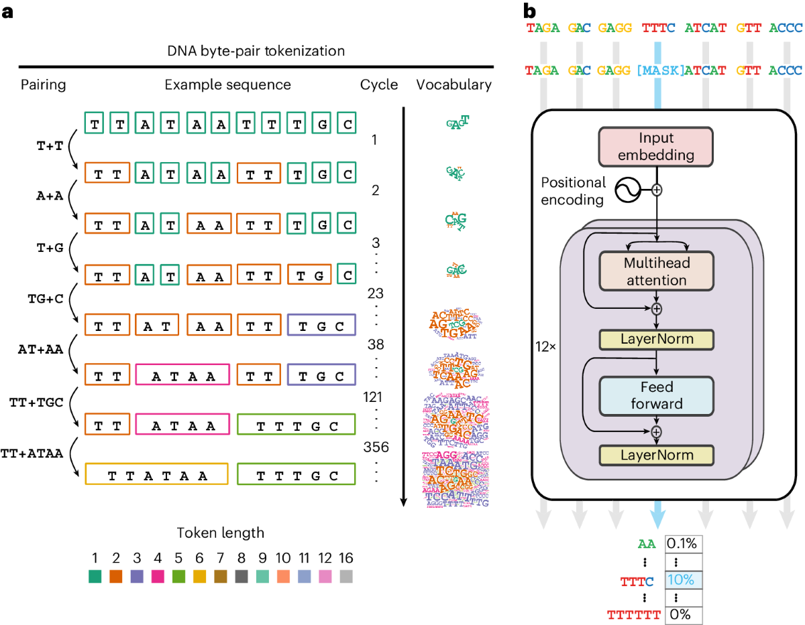
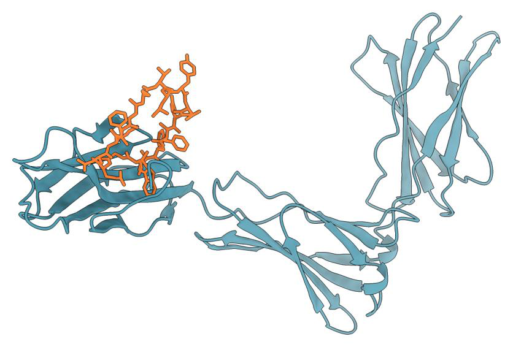

PROJECT 01
AI in Genomics →
Prediction, analysis and collaborative scientific reasoning: connecting genomic data with testable research questions.
View project and workflows →
RESEARCH PROJECTS
Explore each project’s scientific questions, methods and workflow.
PROJECT 01
Prediction, analysis and collaborative scientific reasoning: connecting genomic data with testable research questions.
View project and workflows →
PROJECT 02
Reference-led IL-23R redesign and epitope-guided IL-17 cyclic peptide design, with chemical, interface and property assessment.
View project and workflows →
PROJECT 03
Interface-guided OX40 VHH design, sequence construction and human/cynomolgus multi-model review.
View project and workflows →